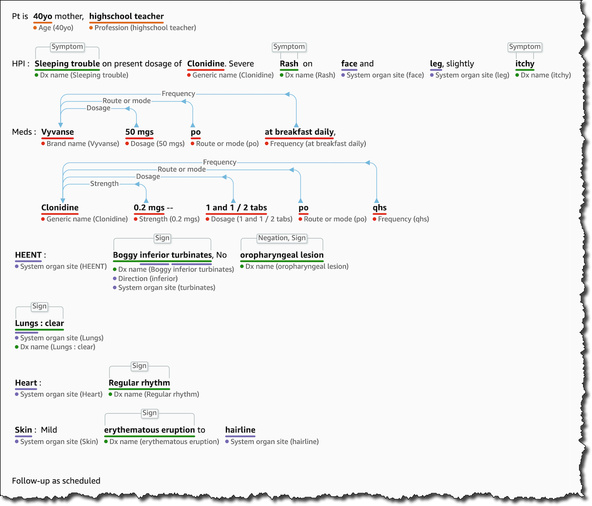

Beschreibung
Amazon Comprehend Medical ist ein fortschrittlicher Dienst von Amazon Web Services (AWS), der speziell für das
Gesundheitswesen entwickelt wurde. Dieser Dienst nutzt maschinelles Lernen, um unstrukturierte medizinische Textdaten zu
analysieren und wertvolle Einblicke zu gewinnen.
Eine der herausragenden Funktionen von Amazon Comprehend Medical ist die Entitätsextraktion. Der Dienst kann
automatisch medizinische Entitäten wie Krankheiten, Symptome, Diagnosen, Medikamente, Behandlungen und Dosierungen aus
unstrukturierten Texten extrahieren. Diese präzise Identifizierung und Klassifizierung unterstützt Ärzte und
medizinisches Personal dabei, Informationen schneller zu analysieren und zu verstehen.
Darüber hinaus kann Amazon Comprehend Medical Beziehungen zwischen verschiedenen medizinischen Entitäten erkennen
und verstehen. Zum Beispiel kann er automatisch erkennen, welche Medikamente einem Patienten verschrieben wurden oder
welche Symptome mit einer bestimmten Krankheit verbunden sind. Diese Beziehungen helfen, den Gesundheitszustand eines
Patienten besser zu verstehen und die Behandlung zu optimieren.
Ein weiterer wichtiger Aspekt von Amazon Comprehend Medical ist seine HIPAA-Konformität. Der Dienst erfüllt die
Anforderungen des Health Insurance Portability and Accountability Act (HIPAA) und bietet ein hohes Maß an Datenschutz
und Sicherheit für medizinische Daten. Das ermöglicht Gesundheitseinrichtungen und Anbietern, den Dienst sicher für die
Analyse sensibler Gesundheitsinformationen zu nutzen.
Amazon Comprehend Medical lässt sich nahtlos in andere AWS-Services integrieren, darunter Amazon S3 für die Speicherung
von medizinischen Textdaten und Amazon SageMaker für die Entwicklung und Bereitstellung von maßgeschneiderten
Machine-Learning-Modellen. Diese Integration ermöglicht Kunden leistungsstarke Analyse- und Automatisierungslösungen für
das Gesundheitswesen zu entwickeln.
Zusätzlich bietet Amazon Comprehend Medical die Möglichkeit, benutzerdefinierte Inferenzkategorien und
Entitätstypen zu erstellen, um spezifische Anforderungen und Anwendungsfälle im Gesundheitswesen zu erfüllen.
Dadurch wird eine präzisere und personalisierte Analyse von medizinischen Textdaten ermöglicht, die den individuellen
Bedürfnissen von Gesundheitseinrichtungen entspricht.
Insgesamt bietet Amazon Comprehend Medical eine leistungsstarke Plattform für die Analyse und Verarbeitung von
medizinischen Textdaten. Durch die Nutzung von maschinellem Lernen können Gesundheitseinrichtungen und Anbieter
wertvolle Erkenntnisse gewinnen, die dazu beitragen, die Patientenversorgung zu verbessern, klinische Entscheidungen zu
unterstützen und die Effizienz im Gesundheitswesen zu steigern.
-Fortschrittlicher Dienst von AWS für das Gesundheitswesen.
-Verwendet maschinelles Lernen zur Analyse unstrukturierter medizinischer Textdaten.
-Entitätsextraktion: Identifiziert Krankheiten, Symptome, Medikamente und mehr.
-Beziehungsextraktion: Erkennt Zusammenhänge zwischen medizinischen Entitäten.
-HIPAA-Konformität: Erfüllt HIPAA-Anforderungen für Datenschutz und Sicherheit.
-Integration mit anderen AWS-Services: Nahtlose Einbindung in Amazon S3 und Amazon SageMaker.
-Anpassbare Inferenz: Ermöglicht die Erstellung benutzerdefinierter Inferenzkategorien.
- Bietet wertvolle Einblicke zur Verbesserung der Patientenversorgung und klinischen Entscheidungsfindung im
Gesundheitswesen.
Schlüsselwörter
Schlüsselworte bzw. Schlagworte sollen uns dabei helfen, einen Service leichter zu erkennen, wenn es um Prüfungsfragen geht. Ließ dir die Fragen richtig durch und achte auf folgende Schlüsselworte. Sie können dir bei der Beantwortung der Fragen helfen.
- Medizinische Textanalyse
- Entitätsextraktion
- Krankheitsdiagnosen
- Behandlungsinformationen
- Medikamentennamen
- Prozeduren und Verfahren
- Anatomische Begriffe
- Patientendatenanalyse
- Einhaltung von Datenschutzrichtlinien im Gesundheitswesen (HIPAA)
- Integration mit medizinischen Informationssystemen
Grafische Erklärung/Beispiel für einen medizinischen Text, in dem Worte von Comprehend Medical erkannt werden.
Prüfung Fragen
- Welche Art von Entitäten kann Amazon Comprehend Medical erkennen und extrahieren?
- Welche besonderen Herausforderungen können bei der Anwendung von Amazon Comprehend Medical auftreten, insbesondere im Vergleich zur Verarbeitung allgemeiner Texte durch herkömmliche NLP-Modelle?
- Wie können Kunden Amazon Comprehend Medical zur Verbesserung der klinischen Entscheidungsfindung einsetzen?